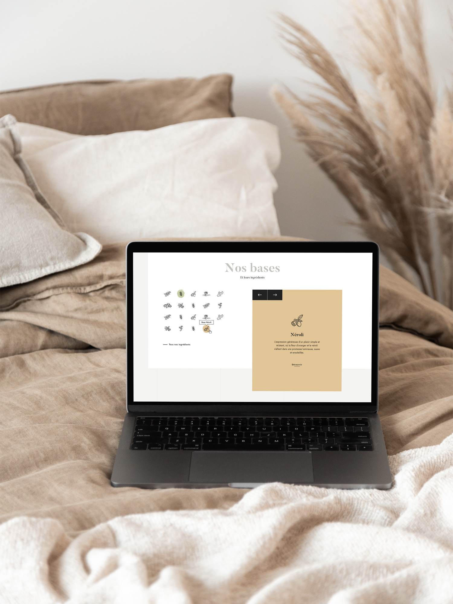
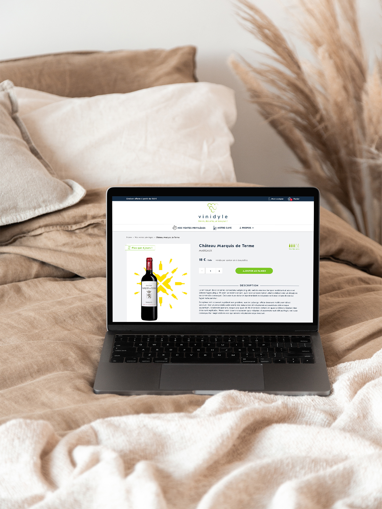
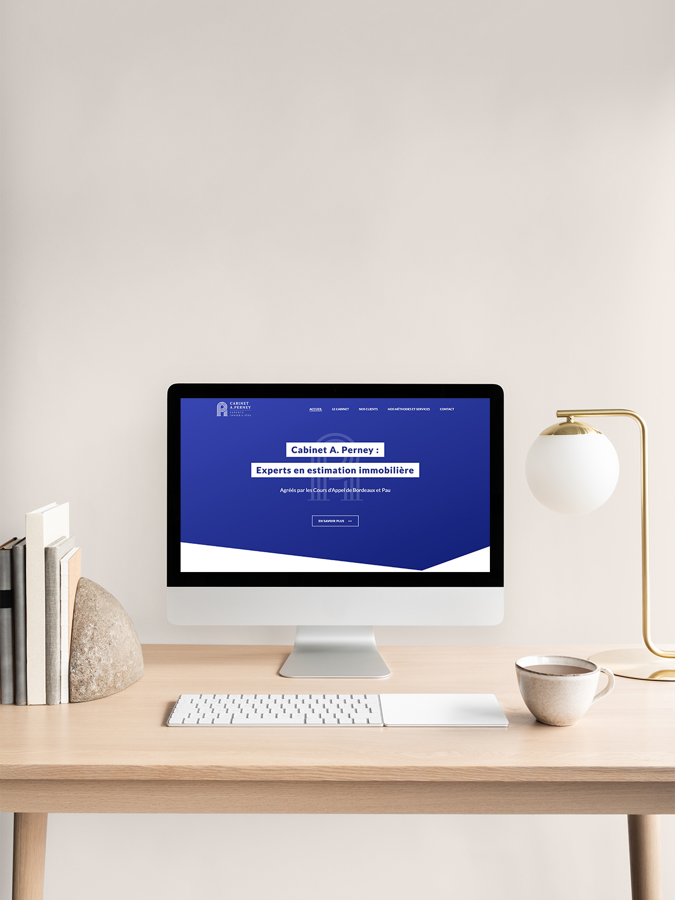

Web Design • UX/UI • Direction Artistique
Bases Parfums
Un design inspiré du Bauhaus pour essences organiques
Bases propose la création de parfums sur-mesure à partir d'un orgue de 19 fragrances naturelles et bio assemblées par des parfumeurs de renom.
Studio Mund a accompagné la marque dans la conception de son interface web. Nous nous sommes inspirés des concepts visuels du mouvement Bauhaus, caractérisés par la rigueur géométrique et l'élégance minimaliste.
Cette structure harmonieuse facilite le parcours utilisateur tout en traduisant visuellement la pureté, la noblesse et l'authenticité des matières premières utilisées.


